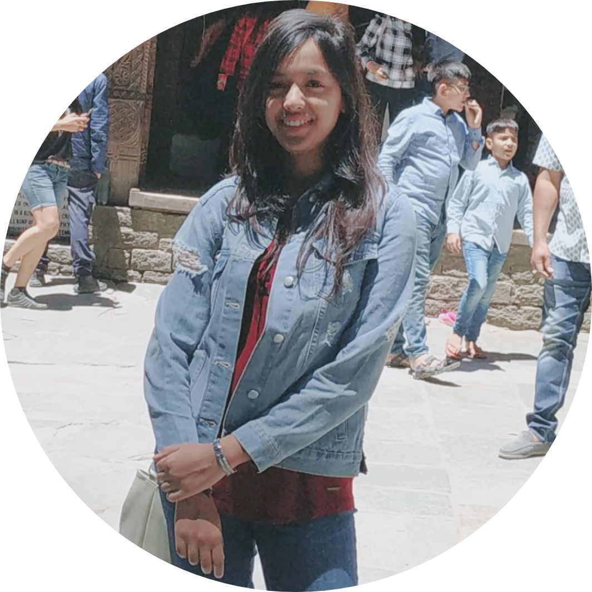

About me

Shruti Agarwal
Hi people! Pursuing B.Tech in Computer Science and Engineering, I am a third year undergrad from SKIT, Jaipur.
I created this website to list all my favourite places that I want to visit in near future. I have always pictured
myself travelling to these places and visiting every famous tourist spot that is briefly described here. Travelling
gives us a break from our routine lives which is extremely essential not only for joy but for our professional lives
as well. Working monotonously may decrease our performance graph. The moments that we spend travelling become one
of the most precious memories for life.